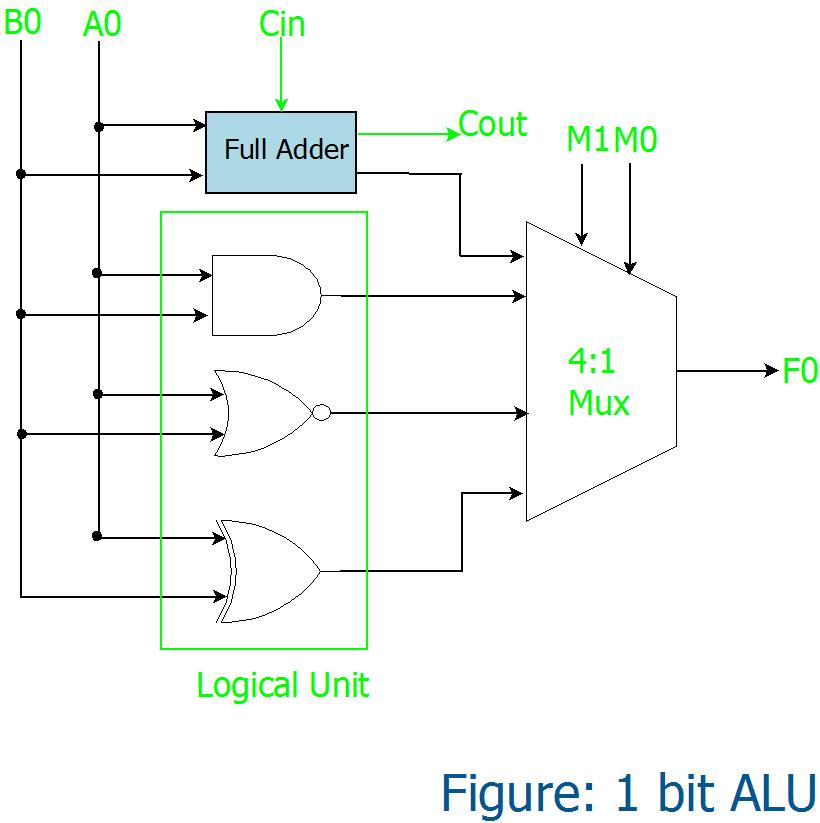

Arithmetic Logic Unit
Introduction
Ok, so we know how to add, subtract, theoretically multiply, and conduct logical operations. Now, to put it all together into the ALU, a core part of our CPU.
An ALU is a digital circuit that performs all the arithmetic and logic in a program in a central place. Imagine you are building an assembler, and you want to instruct the CPU to load a value into two registers, add them, then XOR the values in both registers and save the result in a third register. In every operation, the CPU would consult the ALU to come up with the output given some inputs.

The final ALU we will build models the above diagram. At a fundamental level, we will input two integers. We use a opcode to instruct the ALU on which operation to perform (such as add, subtract, OR, etc.). An opcode is typically a n-bit value, and, in our context, is 4 bits for 16 operations. The ALU spits out both a resulting integer based on the operation selected and some status flags (section 9).
How it Works
The ALU seems daunting but really it is just putting together what you already know. If we take the above diagram, and look under the hood, this would be a potential design of the ALU.
The implementation of the ALU design is subjective, but in most cases you need to have some decoder to indicate which operation you want to perform, or the opcode. On our simple ALUs, you would then take the bits in the same positions from the two inputs, indicated by A0 and B0, and perform all selected operations, which were add, AND, NOR, and XOR in this context. The opcode would then allow you to create a selection in a nx1 multiplexer, where n is the number of operations your ALU has.
Alternatively, instead of using a multiplexer you could use the decoder directly and AND the selected opcode with the result of the specific operation needed, which means only those bits get forwarded to the output. This can make things easier to understand, but you would now need space to conduct a bunch more AND operations.
For example, let's say our opcode selected was 1010 for the ADD operation and we forwarded a signal to the result of the ADD gate, which we say is 1001001. Conducting an AND operation with each bit in 1001001, would yield the same thing. In other words, we have some opcode signal of 1 or 0, and only one operation should be fed a signal of 1 based on the decoder.
Disclaimer
You will need to be comfortable with logic gates, adders, encoders, and decoders for this portion of the book. Moreover, we do take some liberties in simplifying the components of a computer in digital logic circuits, and make it easiest to understand in the context of this class. If you want to learn more about the ALU, please feel free to delve into an engineering department digital logic class.